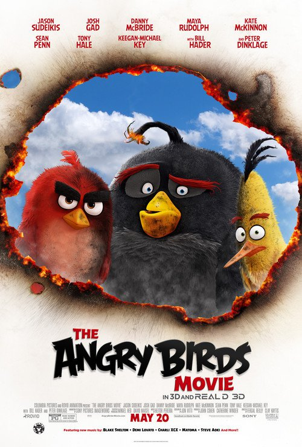

In Theatres
Finding Dory
The friendly but forgetful blue tang fish begins a search for her long-lost parents, and everyone learns a few things about the real meaning of family along the way.
Runtime: 97 mins
Ice Age: Collision Course
Manny, Diego, and Sid join up with Buck to fend off a meteor strike that would destroy the world.
Runtime: 94 mins

The Angry Birds Movie
Find out why the birds are so angry. When an island populated by happy, flightless birds is visited by mysterious green piggies, it's up to three unlikely outcasts - Red, Chuck and Bomb - to figure out what the pigs are up to.
Runtime: 97 mins

The Secret Life of Pets
The quiet life of a terrier named Max is upended when his owner takes in Duke, a stray whom Max instantly dislikes.
Runtime: 87 mins